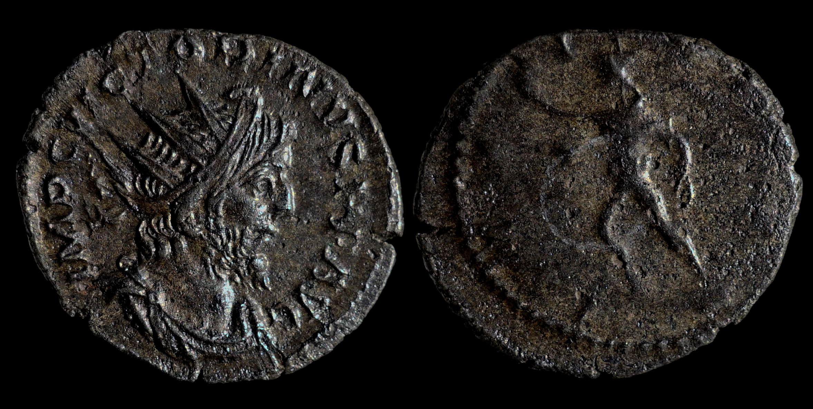

Joseph's Ancient Coins
Victorinus
AE Antoninianus

269 - 271 A.D., Cologne Mint
2.70g, 21.0mm, 12H
Obverse: IMP C VICTORINVS P F AVG, Bust of Victorinus, radiate, draped, right, or bust of Victorinus, radiate, draped, cuirassed, facing right
Reverse: INVICTVS, Sol, walking left, raising right hand and holding whip in left hand
Provenance: Ex. South Petherton Hoard
Reference: RIC V 114